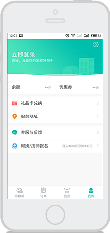
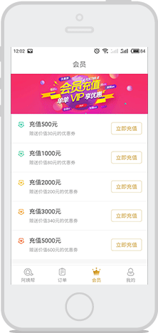
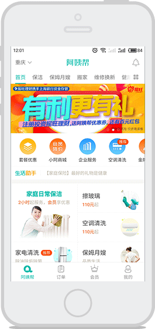

O2O上门服务是一种用户通过手机、微信、网站等多种渠道下单，并由商家提供上门服务的新型服务模式，它是一款基于LBS帮助商家实现
O2O上门服务的手机应用系统，提供在线下单、支付、评价等功能，O2O上门系统现有手机APP端（Android+iOS）、微信端及PC管理后台
，更有资深工程师团队+完善售后支撑，免除您的后顾之忧！
  上门服务APP适用场景多，应用范围广，覆盖衣食住行，吃喝玩乐等各种生活服务
我们还提供系统的深度定制方案和丰富的二次开发接口，犹如量体裁衣，完全贴合您的实际业务需求！
家政保洁
外卖点餐
美容美甲
司机代驾
快递众包
服装定制
上门SPA
中医推拿
上门家教
健身教练
厨师上门
美发服务
婚庆服务
汽车保养
上门洗车
园林绿化
宠物美容
家具装潢
成熟的O2O上门服务系统，节约您的开发成本、缩短业务上线时间，助您迅速开启O2O上门服务，在卡位战中跑赢对手，快速抢占市场份额
！
1.自有平台，自由门店，自聘员工，自己获得所有收入； 2.快速添加服务种类+服务人员，即可开展噢o上门服务。
1、020系统就是您的020上门服务平台； 2、无需自有门店或员工，而是自有平台、自己运营推广； 3、服务人员可以挂靠或加盟形式加入平台，平台抽取服务佣金。
1.您无需拥有门店或招聘员工，上门服务APP就是您的平台； 2.线下商家、连锁企业以加盟形式加入平台，平台收取服务金。
O2O上门服务系统是一款基于LBS提供上门服务的移动互联网应用系统，集PC WEB、安卓APP、苹果APP、微信四大主流平台于一身，能够快
速帮助企业及个人快速构建O2O（线上到线下）服务体系，体系囊括家政、美容美甲、代驾、清洗、物流、维修等所有直流服务场景对接、流
流量转化与变现，本系统提供优质的技术服务为创业扶持等全链路解决方案全方位助力创业团队的快速成长及商业变现。
用户 多渠道快捷下单 手机APP、微信、网站均可下单，多 渠道预约，实现在线下单、支付。
技师 专用手机APP端 服务人员使用手机即可管理日常：包 括接单、导航、与客户沟通等。
企业/加盟商 一个独立管理后台（PC端） 方便管理订单状态、服务情况、资金 流水，实现用户、技师、商户、资金 全掌控。
越来越多的懒人族，催生懒人经济，促使O2O上门服务蓬勃发展，上门服务O2O系统为您提供上门服务、预约到店、上门+到店通吃的
多种服务模式，适用于家里、公司、商场、公园等各种使用场景，满足不同用户需求。
因懒、闲、累、忙、礼等多种原因吸引个人 用户为自己、朋友、父母、下单；企业用户 为员工、客户下单让大家享受便捷的o2o上 门服务。
用户选择门店+服务项目+技师，能享受更 多样的服务，使用更专业的服务设备。
吸纳两种模式优点；线上、线下互相引流； 扩展商家用户群及服务范围。
业务覆盖广
客户足不出户下单
各种促销手段配合促销
优惠活动实惠推送至客户手机
大数据分析备货避免折损
节省门店费用
客户充值提前变现
更高的效率
集购物商城，上门服务，到店服务，团购等功能于一身
支持社会化分享，口碑点评，团购等多种模式，灵活多变，满足你的一切需求
LBS定位
评价
热销排行
banner轮番
分类服务
地址管理
分享组件
个人中心
多种支付方式
消息推送
优惠券
基本设置
华佗驾到
懒人家政
无忧保姆
阿姨帮
e家洁
匠人
打造全新的服务新模式，灵活的线上交易平台，集多种特色功能于一体，让你足不出户掌握一切；多种特色功能模块，订单信息一
键导出；优惠券跟踪订单查询；栏目设置，跳转任意界面等特色功能更方便客户管理后台信息，操作便捷，优秀的界面及人性化的
操作让你爱不释手。
| 模块 | 功能 | 具体功能说明 |
|---|---|---|
| 订单管理 | 排期查看 | 用于查看服务人员日程排期 |
| 服务详情 | 用于查看服务人员服务细项 | |
| 所有日程 | 用于查看服务人员本周所有服务排期 | |
| 人员详情 | 用于查看服务人员的详细信息，包括姓名和联系方式等 | |
| 待审核列表 | 用于查看处理申请加盟人员资料 | |
| 基础信息审核 | 用于查看处理加盟的人员基本资料 | |
| 服务详情 | 服务凭证审核 | |
| 消息推送 | 公告推送 | 用于向所有的服务人员进行公告的推送群发 |
| 版本推送 | 用于向所有的服务人员或用户进行客户端版本推送 | |
| 历史公告 | 用于查询以往推送的公告 | |
| 历史版本 | 用于查询历史的版本信息 | |
| 数据统计 | 订单统计 | 系统通过记录订单量、日均订单量数据以统计方式整理查看 |
| 加盟人员统计 | 系统通过记录服务人员工作量、订单数量数据以统计方式整理查看 | |
| 资金统计 | 系统通过记录各时间段资金收入数据以统计方式整理查看 | |
| 业绩统计 | 系统通过记录服务人员工作量、收入以及时间之间关系数据以统计方式整理查看 | |
| 订单管理 | 订单统计 | 后台工作人员处理订单需求，包括取消订单、订单重新分配等操作 |
| 待接收订单 | 用于查看处理待服务人员接受的订单状况 | |
| 待完成订单 | 用于查看处理待服务人员完成的订单状况 | |
| 已完成订单 | 用于查看处理待服务人员完成的订单状况 | |
| 退款订单 | 用于查看处理待订单退款状况 | |
| 资金管理 | 提现申请列表 | 后台工作人员处理订单需求，包括取消订单、订单重新分配等操作 |
| 提现申请审核 | 用于查看处理待服务人员接受的订单状况 | |
| 申请提现历史 | 用于查看处理待服务人员完成的订单状况 | |
| 评价管理 | 评价查看 | 后台工作人员用于查看客户对服务人员做出的评价信息 |
| 评价回复 | 后台工作人员对用户提交的评价信息执行评价处理 | |
| 任务调度 | 自动任务调度 | 通过对任务时间 地点服务种类的计算，对用户端展现的服务和人员进行控制 |
| 手动任务调度 | 用户可以对自动分配的任务进行手动干预 | |
| 服务管理 | 服务审核 | 对服务人员提交的任务进行审核 |
| 广告管理 | 广告管理 | 对客户端首页的banner进行管理 |
| 广告配置 | 对客户端首页的banner进行管理 |